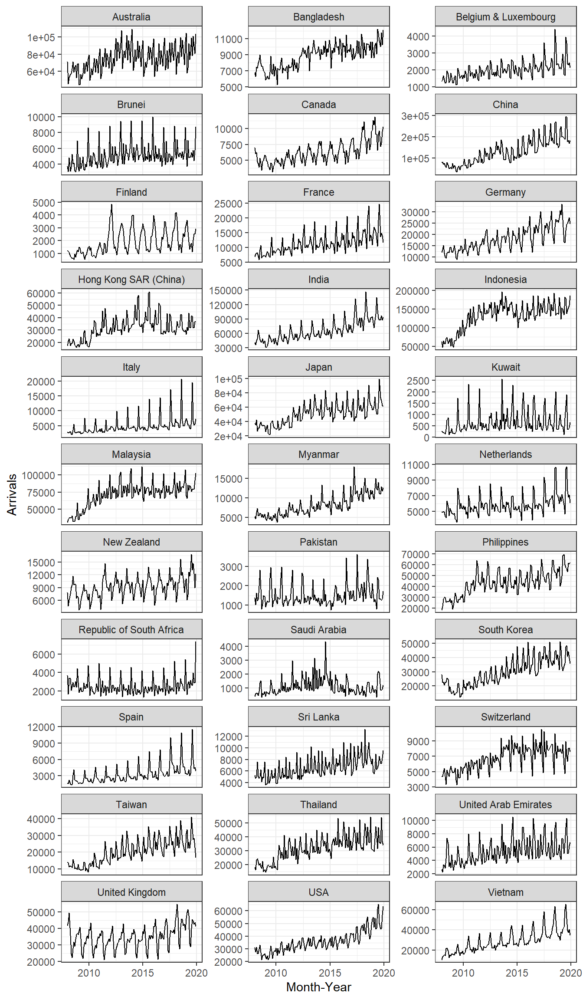
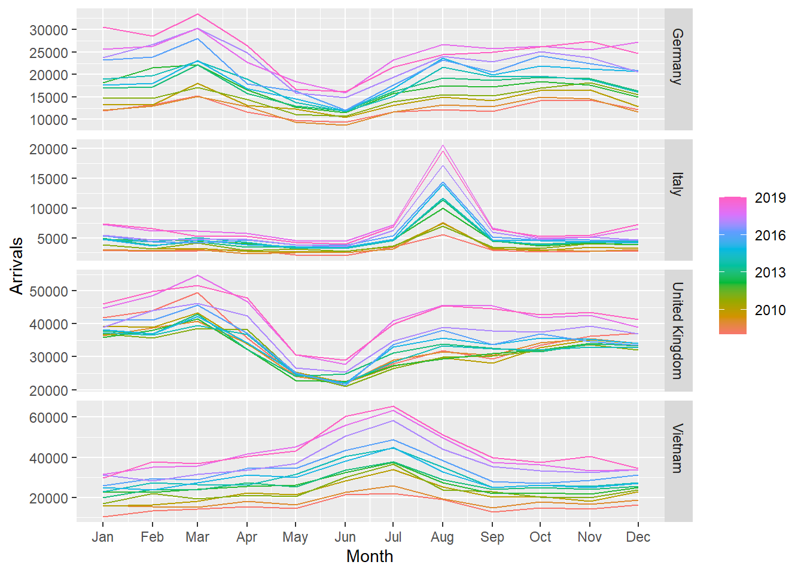
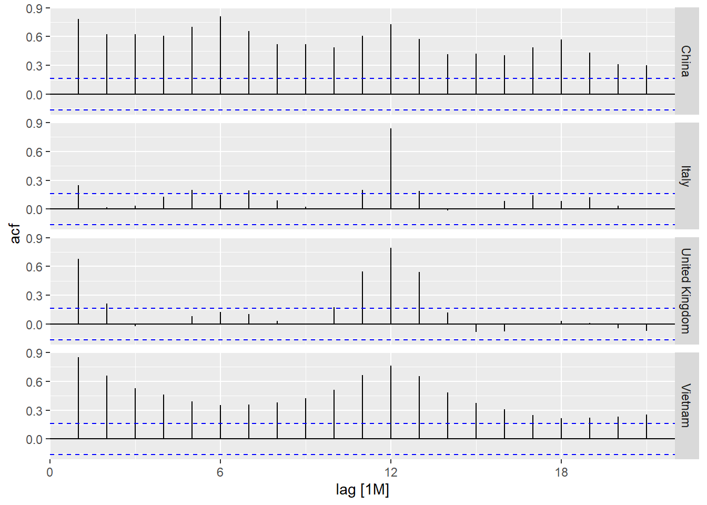
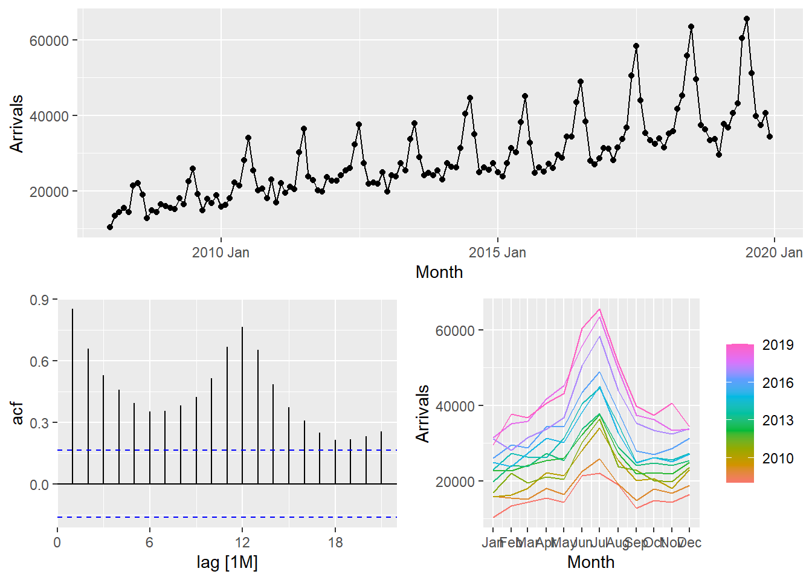
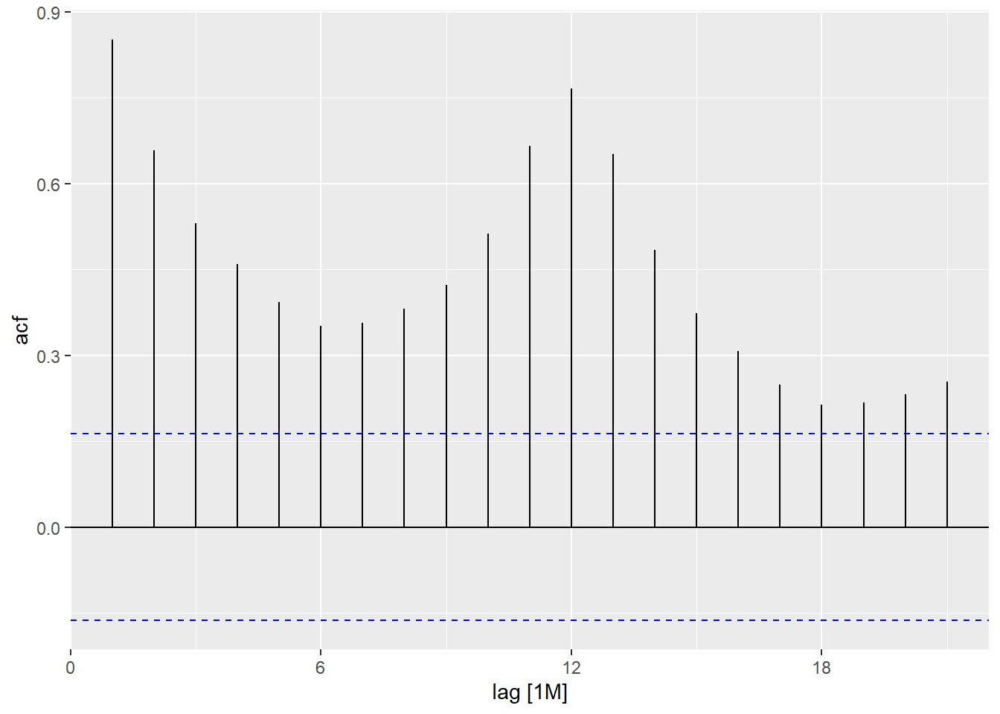
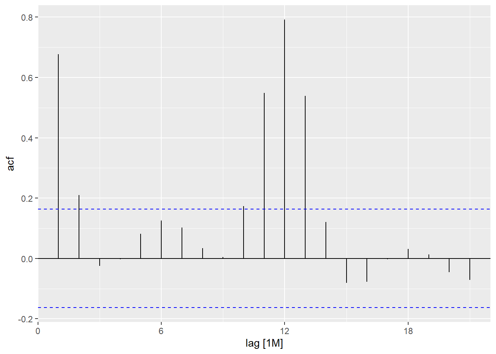

pacman::p_load(tidyverse,tsibble,feasts,fable,seasonal)In-Class_Ex07
ts_data <- read_csv("data/visitor_arrivals_by_air.csv",show_col_types = FALSE)Converting Data
dmy() is used to convert data type of Month-Year field from character to Date.
ts_data$`Month-Year`<- dmy(ts_data$`Month-Year`)Conventional base ‘ts’ object versus ‘tibble’ object
tibble object
ts_data_ts <- ts(ts_data)
head(ts_data_ts) Month-Year Republic of South Africa Canada USA Bangladesh Brunei China
[1,] 13879 3680 6972 31155 6786 3729 79599
[2,] 13910 1662 6056 27738 6314 3070 82074
[3,] 13939 3394 6220 31349 7502 4805 72546
[4,] 13970 3337 4764 26376 7333 3096 76112
[5,] 14000 2089 4460 26788 7988 3586 64808
[6,] 14031 2515 3888 29725 8301 5284 55238
Hong Kong SAR (China) India Indonesia Japan South Korea Kuwait Malaysia
[1,] 17103 41639 62683 37673 27937 284 31352
[2,] 21089 37170 47834 35297 22633 241 35030
[3,] 23230 44815 64688 42575 22876 206 37629
[4,] 17688 49527 58074 26839 20634 193 37521
[5,] 19340 67754 57089 30814 22785 140 38044
[6,] 19152 57380 70118 31001 22575 354 40419
Myanmar Pakistan Philippines Saudi Arabia Sri Lanka Taiwan Thailand
[1,] 5269 1395 18622 406 5289 13757 18370
[2,] 4643 1027 21609 591 4767 13921 16400
[3,] 6218 1635 28464 626 4988 11181 23387
[4,] 7324 1232 30131 644 7639 11665 24469
[5,] 5395 1306 30193 470 5125 11436 21935
[6,] 5542 1996 25800 772 4791 10689 19900
United Arab Emirates Vietnam Belgium & Luxembourg Finland France Germany
[1,] 2652 10315 1341 1179 6918 11982
[2,] 2230 13415 1449 1207 7876 13256
[3,] 3353 14320 1674 1071 8066 15185
[4,] 3245 15413 1426 768 8312 11604
[5,] 2856 14424 1243 690 7066 9853
[6,] 4292 21368 1255 624 5926 9347
Italy Netherlands Spain Switzerland United Kingdom Australia New Zealand
[1,] 2953 4938 1668 4450 41934 71260 7806
[2,] 2704 4885 1568 4381 44029 45595 4729
[3,] 2822 5015 2254 5015 49489 53191 6106
[4,] 3018 4902 1503 5434 35771 56514 7560
[5,] 2165 4397 1365 4427 24464 57808 9090
[6,] 2022 4166 1446 3359 22473 63350 9681The code chunk below converting ts_data from tibble object into tsibble object by using as_tsibble() of tsibble R package.
ts_tsibble <- ts_data %>%
mutate(Month = yearmonth(`Month-Year`)) %>%
as_tsibble(index = `Month`)tsibble object
ts_tsibble# A tsibble: 144 x 35 [1M]
`Month-Year` `Republic of South Africa` Canada USA Bangladesh Brunei China
<date> <dbl> <dbl> <dbl> <dbl> <dbl> <dbl>
1 2008-01-01 3680 6972 31155 6786 3729 79599
2 2008-02-01 1662 6056 27738 6314 3070 82074
3 2008-03-01 3394 6220 31349 7502 4805 72546
4 2008-04-01 3337 4764 26376 7333 3096 76112
5 2008-05-01 2089 4460 26788 7988 3586 64808
6 2008-06-01 2515 3888 29725 8301 5284 55238
7 2008-07-01 2919 5313 33183 9004 4070 80747
8 2008-08-01 2471 4519 27427 7913 4183 66625
9 2008-09-01 2492 3421 21588 7549 3160 52649
10 2008-10-01 3023 4756 25112 7527 2983 54423
# ℹ 134 more rows
# ℹ 28 more variables: `Hong Kong SAR (China)` <dbl>, India <dbl>,
# Indonesia <dbl>, Japan <dbl>, `South Korea` <dbl>, Kuwait <dbl>,
# Malaysia <dbl>, Myanmar <dbl>, Pakistan <dbl>, Philippines <dbl>,
# `Saudi Arabia` <dbl>, `Sri Lanka` <dbl>, Taiwan <dbl>, Thailand <dbl>,
# `United Arab Emirates` <dbl>, Vietnam <dbl>, `Belgium & Luxembourg` <dbl>,
# Finland <dbl>, France <dbl>, Germany <dbl>, Italy <dbl>, …Visualising Time-series Data
ts_longer <- ts_data %>%
pivot_longer(cols = c(2:34),
names_to = "Country",
values_to = "Arrivals")Visualising single time-series: ggplot2 methods
ts_longer %>%
filter(Country == "Vietnam") %>%
ggplot(aes(x = `Month-Year`,
y = Arrivals))+
geom_line(size = 0.5)Plotting multiple time-series data with ggplot2 methods
ggplot(data = ts_longer,
aes(x = `Month-Year`,
y = Arrivals,
color = Country))+
geom_line(size = 0.5) +
theme(legend.position = "bottom",
legend.box.spacing = unit(0.5, "cm"))Plotting multiple time-series data with ggplot2 methods
ggplot(data = ts_longer,
aes(x = `Month-Year`,
y = Arrivals))+
geom_line(size = 0.5) +
facet_wrap(~ Country,
ncol = 3,
scales = "free_y") +
theme_bw()
tsibble_longer <- ts_tsibble %>%
pivot_longer(cols = c(2:34),
names_to = "Country",
values_to = "Arrivals")tsibble_longer %>%
filter(Country == "Italy" |
Country == "Vietnam" |
Country == "United Kingdom" |
Country == "Germany") %>%
gg_season(Arrivals)
19.4.2 Visual Analysis of Seasonality with Cycle Plot
A cycle plot shows how a trend or cycle changes over time. We can use them to see seasonal patterns. Typically, a cycle plot shows a measure on the Y-axis and then shows a time period (such as months or seasons) along the X-axis. For each time period, there is a trend line across a number of years.
Figure below shows two time-series lines of visitor arrivals from Vietnam and Italy. Both lines reveal clear sign of seasonal patterns but not the trend.nn
tsibble_longer %>%
filter(Country == "Vietnam" |
Country == "Italy") %>%
autoplot(Arrivals) +
facet_grid(Country ~ ., scales = "free_y")
using gg_subseries() of feasts package are created.
tsibble_longer %>%
filter(Country == "Vietnam" |
Country == "Italy") %>%
gg_subseries(Arrivals)
Single time series decomposition
tsibble_longer %>%
filter(`Country` == "Vietnam") %>%
ACF(Arrivals) %>%
autoplot()
Multiple time-series decomposition
tsibble_longer %>%
filter(`Country` == "Vietnam" |
`Country` == "Italy" |
`Country` == "United Kingdom" |
`Country` == "China") %>%
ACF(Arrivals) %>%
autoplot()
On the other hand, code chunk below is used to prepare a trellis plot of PACFs for visitor arrivals from Vietnam, Italy, United Kingdom and China.
tsibble_longer %>%
filter(`Country` == "Vietnam" |
`Country` == "Italy" |
`Country` == "United Kingdom" |
`Country` == "China") %>%
PACF(Arrivals) %>%
autoplot()
Composite plot of time series decomposition
One of the interesting function of feasts package time series decomposition is gg_tsdisplay(). It provides a composite plot by showing the original line graph on the top pane follow by the ACF on the left and seasonal plot on the right.
tsibble_longer %>%
filter(`Country` == "Vietnam") %>%
gg_tsdisplay(Arrivals)
Visual STL diagnostics with feasts
tsibble_longer %>%
filter(`Country` == "Vietnam") %>%
model(stl = STL(Arrivals)) %>%
components() %>%
autoplot()
Time Series Data Sampling
vietnam_ts <- tsibble_longer %>%
filter(Country == "Vietnam") %>%
mutate(Type = if_else(
`Month-Year` >= "2019-01-01",
"Hold-out", "Training"))Next, a training data set is extracted from the original data set by using filter() of dplyr package.
vietnam_train <- vietnam_ts %>%
filter(`Month-Year` < "2019-01-01")Exploratory Data Analysis (EDA): Time Series Data
Before fitting forecasting models, it is a good practice to analysis the time series data by using EDA methods.
vietnam_train %>%
model(stl = STL(Arrivals)) %>%
components() %>%
autoplot()
Fitting forecasting model
fit_ses <- vietnam_train %>%
model(ETS(Arrivals ~ error("A")
+ trend("N")
+ season("N")))
fit_ses# A mable: 1 x 2
# Key: Country [1]
Country `ETS(Arrivals ~ error("A") + trend("N") + season("N"))`
<chr> <model>
1 Vietnam <ETS(A,N,N)>Examine Model Assumptions
Next, gg_tsresiduals() of feasts package is used to check the model assumptions with residuals plots.
gg_tsresiduals(fit_ses)
AutoRegressive Integrated Moving Average(ARIMA) Methods for Time Series Forecasting: fable (tidyverts) methods
Visualising Autocorrelations: feasts methods
vietnam_train %>%
gg_tsdisplay(plot_type='partial')
Visualising Autocorrelations: feasts methods
tsibble_longer %>%
filter(`Country` == "Vietnam") %>%
ACF(Arrivals) %>%
autoplot()
tsibble_longer %>%
filter(`Country` == "Vietnam") %>%
ACF(Arrivals) %>%
autoplot()
tsibble_longer %>%
filter(`Country` == "United Kingdom") %>%
ACF(Arrivals) %>%
autoplot()
Differencing: fable methods
Trend differencing
tsibble_longer %>%
filter(Country == "Vietnam") %>%
gg_tsdisplay(difference(
Arrivals,
lag = 1),
plot_type='partial')
Seasonal difference
tsibble_longer %>%
filter(Country == "Vietnam") %>%
gg_tsdisplay(difference(
Arrivals,
difference = 12),
plot_type='partial')
Fitting ARIMA models manually: fable methods
fit_arima <- vietnam_train %>%
model(
arima200 = ARIMA(Arrivals ~ pdq(2,0,0)),
sarima210 = ARIMA(Arrivals ~ pdq(2,0,0) +
PDQ(2,1,0))
)
report(fit_arima)# A tibble: 2 × 9
Country .model sigma2 log_lik AIC AICc BIC ar_roots ma_roots
<chr> <chr> <dbl> <dbl> <dbl> <dbl> <dbl> <list> <list>
1 Vietnam arima200 4173906. -1085. 2181. 2182. 2198. <cpl [26]> <cpl [0]>
2 Vietnam sarima210 4173906. -1085. 2181. 2182. 2198. <cpl [26]> <cpl [0]>Fitting ARIMA models automatically: fable methods
fit_autoARIMA <- vietnam_train %>%
model(ARIMA(Arrivals))
report(fit_autoARIMA)Series: Arrivals
Model: NULL model
NULL model